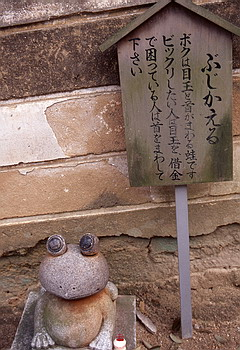
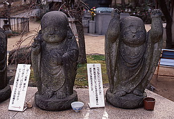

震災の傷跡も未だ癒えない神戸の須磨。何やら物騒な事件も起こり、何となーく暗い雰囲気が漂うこの街だが、そんな気分を吹っ飛ばしてくれるパワースポットが須磨寺である。
この須磨寺、歴史は古く、仁和年間というから平安初期の開創で、源平ゆかりの寺として御存じの方もいるかもしれない。本堂などは豊臣秀頼の再建したもので、古刹と呼ばれるに相応しいところだ。
しかし、よく見ると、珍妙なオブジェが境内のあちらこちらに点在し、そんな古刹ムードが徐々に侵食されているのだ。
その珍妙オブジェは18個。からくり仕掛けである。
からくりといっても電動機械を使ったものなどもあり、ハイテクとまではいかないが、素人が個人で作る域は超えているものばかりだ。丁度公園の遊具からデパートの屋上の10円ゲーム程度のレベルだと思っていただいて結構。
では主なものを順を追って紹介していこう。
まず山門を潜り階段を登り切った右手にある小屋が「小石人形舎」。「動きと光と音の歴史ロマン」というキャッチフレーズとは裏腹に小石に絵を描いた石人形による源平絵巻のジオラマ展示。幾つかの展示物は100円を入れると電動で動くようにはなっているが、壊れているものが多い。
もっとも動いていても「なんじゃワレ、なめとんのかコラあ！」、といった感じである。もしかしたら動きのちゃちさに誰かがキレて破壊したのかも知れない。
で、外に出ると、背中に七福神が刻まれた石の珠が乗っていて、これを廻して御利益を受けて下さいという亀の置き物や一切経を奉納してあって、お堂ごと回転する写経輪堂といった「回りモノ」が続く。
本堂を過ぎるといよいよからくりオブジェの濃度がグッと高くなってくる。
子供の像がスロットマシーン状のおみくじの箱を背負った「わらべおみくじ」、順番にボタンを押していけば平家敗走を歌った名曲「青葉の笛」が演奏出来るモノ、籠の中で下駄がはじけ表裏で占う「一つ事占い」などなど。
そしてこれらの珍妙オブジェの極みが「みざる、きかざる、いわざる」になぜか「おこらざる、みてござる」を足した五匹の猿である。
それぞれ頭を撫でると両手を挙げてくれるというもので、動きに特に意味は無い。
しかしこれも5匹の内2匹は壊れていてユーモアよりも悲壮感が漂っていた。それでも子供達には結構人気で何度も頭を撫でている子供などが多かった。
その奥にはシベリア抑留者のための慰霊碑があり、そこにも音の出るからくり熊がいる。
「ぼくのあたまをやさしくなでてください（略）ならないときはおやすみですからおこらないでね、ミ−シャぐまより」というただし書き通りお休み中だったが。
 
その他首の回る蛙や石を積むと音楽の流れる六地蔵などからくり天国。
さらに天井まで骨壷がびっしり並べられた納骨堂や寺宝の青葉の笛を展示した宝物館（展示状態悪し！）、八十八か所お砂踏み霊場、プラス得体の知れない無気味な像や祠などなど、境内はもう珍物件てんこ盛り。
まるでお寺界のスパリゾートハワイアンズ（旧ハワセン、西日本の方なら新世界のスパワールドかスギノイパレスといったところか）だ。
それにしても訪れた人々はみな笑うでもなくこれらのからくりを見ていく。これってやっぱりギャグ滑ってます、っていうことなんだろうなあ。尤もそれ以前に機械壊れてるからなにがなんだかわからない、っていうのもあるけど。
珍寺大道場 HOME